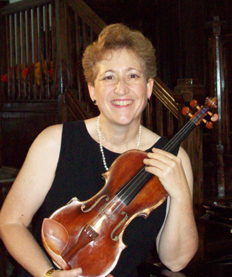

Biography

Julie Metz’s passion for music is evident in its great versatility as well as substance. As a violin and viola performer, Julie has worked with major symphonies and recording artists from around the world. As an educator, she has led pre-concert lectures, created instrumental and music appreciation curriculum, coordinated music programs and taught over 5000 elementary and secondary students and adults.
Julie has worked with the Los Angeles Music Center Opera, Opera Pacific, Santa Fe Opera, North Carolina Opera, Long Beach Symphony, Pacific Symphony Orchestra, San Diego Symphony, Lake Charles, Louisiana Symphony, Laredo, Texas Symphony and The Fresno Philharmonic. She has toured the world extensively with Yanni and his Orchestra, performing in over 200 concerts and three videos.
As a free-lance musician, Julie has accompanied such popular performers as: Glen Campbell, Crystal Gayle, Neil Sedaka, Bernadette Peters, The Temptations, Andy Williams, The 5th Dimension, Art Garfunkel, and Paul Anka. Julie continues to perform as a recitalist and lecturer as well as provide music for the latest Broadway shows.
While still a student, Julie was the violin soloist and consultant for the CBS-Television Movie of the Week, “Running Out.” As a member of the Motion Picture, Television and Recording Industries, she has played on numerous television shows, cartoons, videos, films and commercials.
Julie was the recipient of the Outstanding Teacher Award from the Anaheim Union High School District in 2010 and the Outstanding Contributions to Education Award from the Orange County Department of Education in 2009. She was nominated in 2008 for the Orange County Arts Award for Outstanding Individual Artist. Julie received the Honorary Service Award from the El Dorado O’este PTA Council in 2007 and the Outstanding Music Educator Award from the Pacific Symphony Orchestra in 2000.
She has taught students both privately and within the public and private school systems, in orchestral institutes, chamber ensembles, music camps and training programs. In addition, she has initiated innovative educational programs as well as expanded upon existing ones. Julie has implemented grants and managed programs whereby she was responsible for overseeing up to thirty musicians.
Julie creates and develops educational programs for orchestras. For the last 18 years, she has coordinated and taught instrumental strings and music appreciation to 4th through 6th grade students in the Savanna School District in Anaheim, California in the respected Music Masters Program. In addition, she also coordinates the Gifted and Talented Orchestra of the Anaheim Union High School District. She has contributed her talents by writing music appreciation curriculum for the Los Angeles Philharmonic and Long Beach Symphony for use in the elementary, middle, and secondary schools.
Julie has been a pre-concert lecturer with the Pacific Symphony Orchestra in Orange County, California and the Rochester Symphony. She was also the host of the popular “Meet the Musicians” series at the Orange County Performing Arts Center. Julie is the owner of Jules Entertainment, which provides musical services for special occasions.
A graduate of the Mannes College of Music (B.M.) and the Manhattan School of Music (M.M.), Julie’s teachers have included Glenn Dicterow (Concertmaster, New York Philharmonic), Sally Thomas, Irving Geller (Associate Concertmaster, Los Angeles Philharmonic, Retired) and Joyce Robbins (Metropolitan Opera, Retired). Her conducting teacher was Don Ray, Music Supervisor for the CBS Television Studios.
Julie lives in Los Angeles, California where she enjoys gardening, bicycling and doing projects around the house.